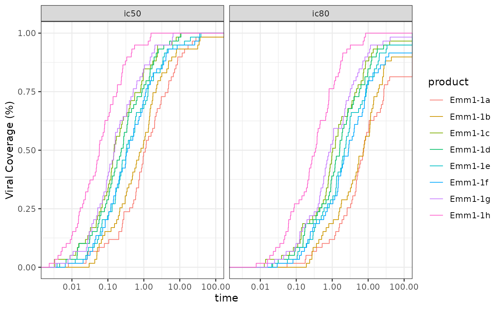
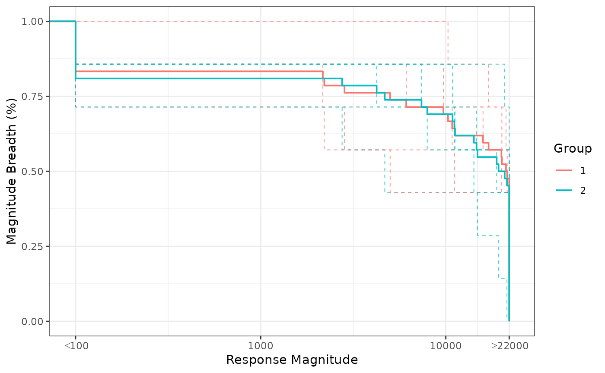
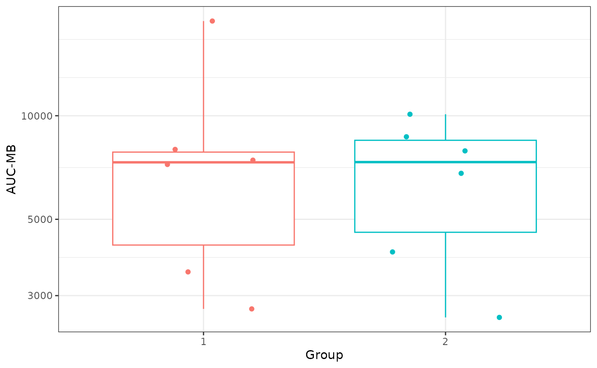

Overview and Introduction to VISCfunctions Package
Jimmy Fulp, Monica Gerber, and Heather Bouzek
2026-01-16
Overview.RmdOverview
VISCfunctions is a collection of useful functions designed to assist in the analysis and creation of professional reports. The current VISCfunctions package can be broken down to the following sections:
- Testing and Estimate Functions
- two_samp_bin_test
- two_samp_cont_test
- cor_test
- binom_ci
- trapz_sorted
- Fancy Output Functions
- pretty_pvalues
- stat_paste
- paste_tbl_grp
- escape
- collapse_group_row
- Pairwise Comparison Functions
- pairwise_test_bin
- pairwise_test_cont
- cor_test_pairs
- Survival and Magnitude Breadth
- create_step_curve
- mb_results
- Utility Functions
- round_away_0
- get_session_info
- get_full_name
- Example Datasets
- exampleData_BAMA
- exampleData_NAb
- exampleData_ICS
- CAVD812_mAB
Getting Started
Code to initially install the VISCfunctions package:
# Installing VISCfunctions from GitHub
remotes::install_github("FredHutch/VISCfunctions")Code to load in VISCfunctions and start using:
# Loading VISCfunctions
library(VISCfunctions)
# Loading dplyr for pipe
library(dplyr)VISCtemplates Package
The VISCtemplates
package makes extensive use of the VISCfunctions package,
and is a great way get started making professional statistical
reports.
Code to initially download VISCtemplates package:
# Installing VISCfunctions from GitHub
remotes::install_github("FredHutch/VISCtemplates")Once installed, in RStudio go to File -> New File -> R
Markdown -> From Template -> VISC PT Report (Generic) to
start a new Markdown report using the template. Within the template
there is code to load and make use of most of the
VISCfunctions functionality.
Example Datasets
The exampleData_BAMA, exampleData_NAb,
exampleData_ICS, and CAVD812_mAB datasets are
assay example datasets used throughout this vignette and most examples
in the VISCfunctions documentation. All example datasets
have associated documentation that can be viewed using ?
(i.e ?exampleData_BAMA).
# Loading in example datasets
data("exampleData_BAMA", "exampleData_NAb", "exampleData_ICS", "CAVD812_mAB")
# Quick view of dataset
str(exampleData_BAMA)
#> 'data.frame': 252 obs. of 6 variables:
#> $ pubID : chr "2435" "2435" "2435" "2435" ...
#> $ group : int 1 1 1 1 1 1 1 1 1 1 ...
#> $ visitno : num 0 0 0 0 0 0 0 1 1 1 ...
#> $ antigen : chr "A1.con.env03 140 CF" "A244 D11gp120_avi" "B.63521_D11gp120/293F" "B.MN V3 gp70" ...
#> $ magnitude: num 12 40.5 35.75 26.25 1.25 ...
#> $ response : int NA NA NA NA NA NA NA 1 1 1 ...Testing and Estimate Functions
There are currently three testing functions performing the appropriate statistical tests, depending on the data and options, returning a p value.
There is also an estimate function for getting binary confidence
intervals (binom_ci()).
trapz_sorted() is used to create an estimate for the
area under a curve while making sure the x-axis is sorted so that both
the x-axis and the area are increasing and positive, respectively.
# Making Testing Dataset
testing_data <- exampleData_BAMA |>
dplyr::filter(antigen == 'A1.con.env03 140 CF' & visitno == 1)Comparing Two Groups (Binary Variable) for a Binary Variable
two_samp_bin_test() is used for comparing a binary
variable to a binary (two group) variable, with options for Barnard,
Fisher’s Exact, Chi-Sq, and McNemar tests. For the Barnard test
specifically, there are many model options that can be set that get
passed to the Exact::exact.test() function.
table(testing_data$response, testing_data$group)
#>
#> 1 2
#> 0 2 0
#> 1 4 6
# Barnard Method
two_samp_bin_test(
x = testing_data$response,
y = testing_data$group,
method = 'barnard',
alternative = 'two.sided'
)
#> [1] 0.1970196
# Santner and Snell Variation
two_samp_bin_test(
x = testing_data$response,
y = testing_data$group,
method = 'barnard',
barnard_method = 'santner and snell',
alternative = 'two.sided')
#> [1] 0.3876953
# Calling test multiple times
exampleData_BAMA |>
group_by(antigen, visitno) |>
filter(visitno != 0) |>
summarise(p_val = two_samp_bin_test(response, group, method = 'barnard'), .groups = "drop")
#> # A tibble: 14 × 3
#> antigen visitno p_val
#> <chr> <dbl> <dbl>
#> 1 A1.con.env03 140 CF 1 0.197
#> 2 A1.con.env03 140 CF 2 1
#> 3 A244 D11gp120 avi 1 1
#> 4 A244 D11gp120 avi 2 1
#> 5 B.63521 D11gp120/293F 1 0.518
#> 6 B.63521 D11gp120/293F 2 1
#> 7 B.MN V3 gp70 1 0.197
#> 8 B.MN V3 gp70 2 1
#> 9 B.con.env03 140 CF 1 1
#> 10 B.con.env03 140 CF 2 1
#> 11 gp41 1 0.667
#> 12 gp41 2 0.774
#> 13 p24 1 1
#> 14 p24 2 0.197Comparing Two Groups (Binary Variable) for a Continuous Variable
two_samp_cont_test() is used for comparing a continuous
variable to a binary (two group) variable, with parametric (t.test) and
non-parametric (Wilcox Rank-Sum) options. Also paired data is allowed,
where there are parametric (paired t.test) and non-parametric (Wilcox
Signed-Rank) options.
by(testing_data$magnitude, testing_data$group, summary)
#> testing_data$group: 1
#> Min. 1st Qu. Median Mean 3rd Qu. Max.
#> 9.75 253.44 648.00 1038.58 1321.00 3258.50
#> ------------------------------------------------------------
#> testing_data$group: 2
#> Min. 1st Qu. Median Mean 3rd Qu. Max.
#> 171.0 259.9 529.8 550.9 781.1 1040.2
two_samp_cont_test(
x = testing_data$magnitude,
y = testing_data$group,
method = 'wilcox',
alternative = 'two.sided'
)
#> [1] 0.6991342
# Calling test multiple times
exampleData_BAMA |>
group_by(antigen, visitno) |>
filter(visitno != 0) |>
summarise(p_val = two_samp_cont_test(magnitude, group, method = 'wilcox'), .groups = "drop")
#> # A tibble: 14 × 3
#> antigen visitno p_val
#> <chr> <dbl> <dbl>
#> 1 A1.con.env03 140 CF 1 0.699
#> 2 A1.con.env03 140 CF 2 0.589
#> 3 A244 D11gp120 avi 1 0.699
#> 4 A244 D11gp120 avi 2 0.394
#> 5 B.63521 D11gp120/293F 1 0.937
#> 6 B.63521 D11gp120/293F 2 0.937
#> 7 B.MN V3 gp70 1 0.699
#> 8 B.MN V3 gp70 2 0.180
#> 9 B.con.env03 140 CF 1 0.699
#> 10 B.con.env03 140 CF 2 0.589
#> 11 gp41 1 0.310
#> 12 gp41 2 0.485
#> 13 p24 1 0.485
#> 14 p24 2 0.240Comparing Two Continuous Variables (Correlation)
cor_test() is used for comparing two continuous
variables, with Pearson, Kendall, or Spearman methods.
If Spearman method is chosen and either variable has a tie, the
approximate distribution is use in the
coin::spreaman_test() function. This is usually the
preferred method over the asymptotic approximation, which is the method
stats:cor.test() uses in cases of ties. If the Spearman
method is chosen and there are no ties, the exact method is used from
stats:cor.test.
# Making Testing Dataset
cor_testing_data <- exampleData_BAMA |>
dplyr::filter(antigen %in% c('A1.con.env03 140 CF', 'B.MN V3 gp70'),
visitno == 1,
group == 1) |>
tidyr::pivot_wider(id_cols = pubID,
names_from = antigen,
values_from = magnitude)
stats::cor(cor_testing_data$`A1.con.env03 140 CF`,
cor_testing_data$`B.MN V3 gp70`,
method = 'spearman')
#> [1] -0.4285714
cor_test(
x = cor_testing_data$`A1.con.env03 140 CF`,
y = cor_testing_data$`B.MN V3 gp70`,
method = 'spearman'
)
#> [1] 0.4194444Computing the Area Under a Curve (Integration Estimate) for Messy Data
trapz_sorted() is used when you are not presorting your
data so that it is strictly increasing along the x-axis or when there
are ‘NA’ values that are not removed prior to estimating the area under
the curve.
set.seed(93)
n <- 10
# unsorted data
x <- sample(1:n, n, replace = FALSE)
y <- runif(n, 0, 42)
pracma::trapz(x, y)
#> [1] 97.44204
trapz_sorted(x,y)
#> [1] 213.7732
# NA in data
x <- c(1:6, NA, 8:10)
y[2] <- NA
pracma::trapz(x, y)
#> [1] NA
trapz_sorted(x,y, na.rm = TRUE)
#> [1] 208.5765Fancy Output Functions
These are functions designed to produce professional output that can easily be printed in reports.
P Values
pretty_pvalues() is used on p-values by rounding them to
a specified number of digits and using < for low p-values as opposed
to scientific notation (i.e., “p < 0.0001” if rounding to 4 digits),
and by allowing options for emphasizing p-values and specific characters
for missing values.
pvalue_example = c(1, 0.06753, 0.004435, NA, 1e-16, 0.563533)
# For simple p value display
pretty_pvalues(pvalue_example, digits = 3, output_type = 'no_markup')
#> [1] "1.000" "0.068" "0.004" "---" "<0.001" "0.564"
# For display in report
table_p_Values <- pretty_pvalues(pvalue_example, digits = 3,
background = "yellow")
kableExtra::kable(
table_p_Values,
escape = FALSE,
linesep = "",
col.names = c("P-values"),
caption = 'Fancy P Values'
) |>
kableExtra::kable_styling(font_size = 8.5,
latex_options = "hold_position")You can also specify if you want p= pasted on the front
of the p values, using the include_p parameter.
Basic Combining of Variables
stat_paste() is used to combine two or three statistics
together, allowing for different rounding and bound character
specifications. Common uses for this function are for:
- Mean (sd)
- Median [min, max]
- Estimate (SE of Estimate)
- Estimate (95% CI Lower Bound, Upper Bound)
- Estimate/Statistic (p value)
# Simple Examples
stat_paste(stat1 = 2.45, stat2 = 0.214, stat3 = 55.3,
digits = 2, bound_char = '[')
#> [1] "2.45 [0.21, 55.30]"
stat_paste(stat1 = 6.4864, stat2 = pretty_pvalues(0.0004, digits = 3),
digits = 3, bound_char = '(')
#> [1] "6.486 (<0.001)"
exampleData_BAMA |>
filter(visitno == 1) |>
group_by(antigen, group) |>
reframe(`Magnitude Info (Median [Range])` =
stat_paste(stat1 = median(magnitude),
stat2 = min(magnitude),
stat3 = max(magnitude),
digits = 2, bound_char = '['),
`Magnitude Info (Mean (SD))` =
stat_paste(stat1 = mean(magnitude),
stat2 = sd(magnitude),
digits = 2, bound_char = '('))
#> # A tibble: 14 × 4
#> antigen group Magnitude Info (Median […¹ Magnitude Info (Mean…²
#> <chr> <int> <chr> <chr>
#> 1 A1.con.env03 140 CF 1 648.00 [9.75, 3258.50] 1038.58 (1210.00)
#> 2 A1.con.env03 140 CF 2 529.75 [171.00, 1040.25] 550.92 (347.74)
#> 3 A244 D11gp120 avi 1 2542.88 [166.25, 19183.25] 5655.17 (7413.17)
#> 4 A244 D11gp120 avi 2 1046.12 [430.00, 3704.00] 1680.71 (1348.20)
#> 5 B.63521 D11gp120/293F 1 1562.88 [69.50, 3910.50] 1719.88 (1572.96)
#> 6 B.63521 D11gp120/293F 2 675.88 [307.75, 5115.50] 1577.17 (1894.48)
#> 7 B.MN V3 gp70 1 117.38 [-36.25, 329.00] 140.04 (158.30)
#> 8 B.MN V3 gp70 2 14.13 [-618.75, 2425.00] 302.71 (1105.90)
#> 9 B.con.env03 140 CF 1 2819.25 [191.25, 5989.75] 3149.50 (2364.75)
#> 10 B.con.env03 140 CF 2 4897.62 [589.75, 13738.25] 5152.88 (4685.93)
#> 11 gp41 1 14377.75 [5380.75, 26021.… 16323.67 (8023.22)
#> 12 gp41 2 25038.50 [8504.50, 32447.… 22558.67 (10658.01)
#> 13 p24 1 6688.12 [1728.00, 13559.0… 6745.00 (4760.00)
#> 14 p24 2 3265.50 [963.50, 9886.25] 3880.46 (3180.21)
#> # ℹ abbreviated names: ¹`Magnitude Info (Median [Range])`,
#> # ²`Magnitude Info (Mean (SD))`Advanced Combining of Variables
paste_tbl_grp() pastes together information, often
statistics, from two groups. There are two predefined combinations:
mean(sd) and median[min,max], but user may also paste any single measure
together.
Example of summary information to be pasted together (partial output):
#> # A tibble: 7 × 6
#> antigen Group1_max Group1_mean Group1_median Group1_min Group1_n
#> <chr> <dbl> <dbl> <dbl> <dbl> <dbl>
#> 1 A1.con.env03 140 CF 3258. 1039. 648 9.75 6
#> 2 A244 D11gp120 avi 19183. 5655. 2543. 166. 6
#> 3 B.63521 D11gp120/293F 3910. 1720. 1563. 69.5 6
#> 4 B.MN V3 gp70 329 140. 117. -36.2 6
#> 5 B.con.env03 140 CF 5990. 3150. 2819. 191. 6
#> 6 gp41 26022. 16324. 14378. 5381. 6
#> 7 p24 13559 6745 6688. 1728 6
summary_table <- summary_info |>
paste_tbl_grp(
vars_to_paste = c('n', 'mean_sd', 'median_min_max'),
first_name = 'Group1',
second_name = 'Group2'
)
kableExtra::kable(
summary_table,
booktabs = TRUE,
linesep = "",
caption = 'Summary Information Comparison'
) |>
kableExtra::kable_styling(font_size = 6.5, latex_options = "hold_position") |>
kableExtra::footnote('Summary Information for Group 1 vs. Group 2, by Antigen and for Visit 1')Escape
escape() protects control characters in a string for use
in a latex table or caption.
Collapsing Rows
collapse_group_row() is for replacing repeated rows in a
data.frame into NA for nice printing. This is an alternative to
kableExtra::collapse_rows(), which does not work well for
tables that span multiple pages
(i.e. longtable = TRUE).
set.seed(341235432)
sample_df <- data.frame(
x = c(1, 1, 1, 2, 2, 2, 2),
y = c('test1', 'test1', 'test2', 'test1', 'test2', 'test2', 'test1'),
z = c(1, 2, 3, 4, 5, 6, 7),
outputVal = runif(7)
)
collapse_group_row(sample_df, x, y, z) |>
kableExtra::kable(
booktabs = TRUE,
linesep = "",
row.names = FALSE
) |>
kableExtra::row_spec(3, hline_after = TRUE) |>
kableExtra::kable_styling(font_size = 8, latex_options = "hold_position")Pairwise Comparison Functions
pairwise_test_bin(), pairwise_test_cont(),
cor_test_pairs() are functions that perform pairwise group
(or any categorical variable) comparisons. The function will go through
all pairwise comparisons and output descriptive statistics and relevant
p values, calling the appropriate testing functions from the Testing and Estimate
Functions section.
Pairwise Comparison of Multiple Groups for a Binary Variable
Simple example using pairwise_test_bin:
set.seed(1)
x_example <- c(NA, sample(0:1, 50, replace = TRUE, prob = c(.75, .25)),
sample(0:1, 50, replace = TRUE, prob = c(.25, .75)))
group_example <- c(rep(1, 25), NA, rep(2, 25), rep(3, 25), rep(4, 25))
pairwise_test_bin(x_example, group_example) |>
rename(Separation = 'PerfectSeparation')
#> Comparison ResponseStats
#> 1 1 vs. 2 7/24 = 29.2% (14.9%, 49.2%) vs. 6/25 = 24.0% (11.5%, 43.4%)
#> 2 1 vs. 3 7/24 = 29.2% (14.9%, 49.2%) vs. 20/25 = 80.0% (60.9%, 91.1%)
#> 3 1 vs. 4 7/24 = 29.2% (14.9%, 49.2%) vs. 16/25 = 64.0% (44.5%, 79.8%)
#> 4 2 vs. 3 6/25 = 24.0% (11.5%, 43.4%) vs. 20/25 = 80.0% (60.9%, 91.1%)
#> 5 2 vs. 4 6/25 = 24.0% (11.5%, 43.4%) vs. 16/25 = 64.0% (44.5%, 79.8%)
#> 6 3 vs. 4 20/25 = 80.0% (60.9%, 91.1%) vs. 16/25 = 64.0% (44.5%, 79.8%)
#> ResponseTest Separation
#> 1 0.76819476151 FALSE
#> 2 0.00038580518 FALSE
#> 3 0.01666966048 FALSE
#> 4 0.00009064775 FALSE
#> 5 0.00498314375 FALSE
#> 6 0.23445322077 FALSEGroup comparison example using pairwise_test_bin:
## Group Comparison
group_testing <- exampleData_ICS |>
filter(Population == 'IFNg Or IL2' & Group != 4) |>
group_by(Stim, Visit) |>
group_modify( ~ as.data.frame(
pairwise_test_bin(x = .$response, group = .$Group,
method = 'barnard', alternative = 'less',
num_needed_for_test = 3, digits = 1,
latex_output = TRUE, verbose = FALSE
)
)) |>
ungroup() |>
# Getting fancy p values
mutate(
ResponseTest = pretty_pvalues(
ResponseTest, output_type = 'latex',
sig_alpha = .1, background = 'yellow'
)
)
kableExtra::kable( group_testing, escape = FALSE, booktabs = TRUE,
linesep = "", caption = 'Response Rate Comparisons Across Groups'
) |>
kableExtra::kable_styling(
font_size = 6.5,
latex_options = c("hold_position", "scale_down")
) |>
kableExtra::collapse_rows(c(1:2),
row_group_label_position = 'identity',
latex_hline = 'full')Time point comparison example (paired) using
pairwise_test_bin():
## Timepoint Comparison
timepoint_testing <- exampleData_ICS |>
filter(Population == 'IFNg Or IL2' & Group != 4) |>
group_by(Stim, Group) |>
group_modify(~ as.data.frame(
pairwise_test_bin(x = .$response, group = .$Visit, id = .$pubID,
method = 'mcnemar', num_needed_for_test = 3, digits = 1,
latex_output = TRUE, verbose = FALSE))) |>
ungroup() |>
# Getting fancy p values
mutate(ResponseTest = pretty_pvalues(ResponseTest, output_type = 'latex',
sig_alpha = .1, background = 'yellow'))
kableExtra::kable(timepoint_testing, escape = FALSE, booktabs = TRUE,
caption = 'Response Rate Comparisons Across Visits') |>
kableExtra::kable_styling(font_size = 6.5,
latex_options = c("hold_position","scale_down")) |>
kableExtra::collapse_rows(c(1:2), row_group_label_position = 'identity',
latex_hline = 'full')Pairwise Comparison of Multiple Groups for a Continuous Variable
Simple example using pairwise_test_cont():
set.seed(1)
x_example <- c(NA, rnorm(50), rnorm(50, mean = 5))
group_example <- c(rep(1, 25), rep(2, 25), rep(3, 25), rep(4, 25), NA)
pairwise_test_cont(x_example, group_example, digits = 1) |>
rename(Separation = 'PerfectSeparation')
#> Comparison SampleSizes Median_Min_Max
#> 1 1 vs. 2 24 vs. 25 0.4 [-2.2, 1.6] vs. -0.1 [-1.5, 1.4]
#> 2 1 vs. 3 24 vs. 25 0.4 [-2.2, 1.6] vs. 5.2 [0.9, 7.4]
#> 3 1 vs. 4 24 vs. 25 0.4 [-2.2, 1.6] vs. 5.1 [3.5, 6.6]
#> 4 2 vs. 3 25 vs. 25 -0.1 [-1.5, 1.4] vs. 5.2 [0.9, 7.4]
#> 5 2 vs. 4 25 vs. 25 -0.1 [-1.5, 1.4] vs. 5.1 [3.5, 6.6]
#> 6 3 vs. 4 25 vs. 25 5.2 [0.9, 7.4] vs. 5.1 [3.5, 6.6]
#> Mean_SD MagnitudeTest Separation
#> 1 0.1 (1.0) vs. 0.0 (0.7) 0.28742747500751675283 FALSE
#> 2 0.1 (1.0) vs. 5.1 (1.4) 0.00000000000060121537 FALSE
#> 3 0.1 (1.0) vs. 5.0 (0.9) 0.00000000000003164291 TRUE
#> 4 0.0 (0.7) vs. 5.1 (1.4) 0.00000000000006328583 FALSE
#> 5 0.0 (0.7) vs. 5.0 (0.9) 0.00000000000001582146 TRUE
#> 6 5.1 (1.4) vs. 5.0 (0.9) 0.86260828521739307817 FALSEGroup comparison example using pairwise_test_cont():
## Group Comparison
group_testing <- exampleData_ICS |>
filter(Population == 'IFNg Or IL2' & Group != 4) |>
group_by(Stim, Visit) |>
group_modify(~ as.data.frame(
pairwise_test_cont(x = pmax(.$PercentCellNet, 0.00001), group = .$Group,
method = 'wilcox', paired = FALSE,
alternative = 'greater', num_needed_for_test = 3,
digits = 3, log10_stats = TRUE))) |>
ungroup() |>
# Getting fancy p values
mutate(MagnitudeTest = pretty_pvalues(
MagnitudeTest, output_type = 'latex',
sig_alpha = .1, background = 'yellow')
) |>
rename("Median (Range)" = Median_Min_Max, 'Mean (SD) (log10)' = log_Mean_SD)
kableExtra::kable(group_testing, escape = FALSE, booktabs = TRUE,
caption = 'Magnitude Comparisons Across Groups') |>
kableExtra::kable_styling(font_size = 6.5,
latex_options = c("hold_position","scale_down")) |>
kableExtra::collapse_rows(c(1:2),
row_group_label_position = 'identity',
latex_hline = 'full')Time point comparison example (paired) using
pairwise_test_cont():
## Timepoint Comparison
timepoint_testing <- exampleData_ICS |>
filter(Population == 'IFNg Or IL2' & Group != 4) |>
group_by(Stim, Group) |>
group_modify(~ as.data.frame(
pairwise_test_cont(x = pmax(.$PercentCellNet, 0.00001), group = .$Visit,
id = .$pubID, method = 'wilcox', paired = TRUE,
num_needed_for_test = 3,
digits = 3, log10_stats = TRUE))) |>
ungroup() |>
# Getting fancy p values
mutate(MagnitudeTest = pretty_pvalues(
MagnitudeTest, output_type = 'latex',
sig_alpha = .1, background = 'yellow')
) |>
rename("Median (Range)" = Median_Min_Max, 'Mean (SD) (log10)' = log_Mean_SD)
kableExtra::kable(timepoint_testing,
escape = FALSE,
booktabs = TRUE,
caption = 'Magnitude Comparisons Across Visits') |>
kableExtra::kable_styling(font_size = 6.5,
latex_options = c("hold_position","scale_down")) |>
kableExtra::collapse_rows(c(1:2),
row_group_label_position = 'identity',
latex_hline = 'full')Pairwise Comparison of Continuous Variables (Correlation)
Simple example using cor_test_pairs:
set.seed(1)
x_example <- c(1, 1, rnorm(48), rnorm(49, mean = 5), NA)
pair_example <- c(rep('antigen A', 25), rep('antigen B', 25),
rep('antigen C', 25), rep('antigen D', 25))
id_example <- c(rep(1:25, 4))
cor_test_pairs(x_example, pair_example, id_example, digits = 4)
#> Correlation NPoints Ties CorrEst CorrTest
#> 1 antigen A and antigen B 25 ties in antigen A -0.1012 0.6263000
#> 2 antigen A and antigen C 25 ties in antigen A -0.0727 0.7186000
#> 3 antigen A and antigen D 24 ties in antigen A 0.0100 0.9666000
#> 4 antigen B and antigen C 25 no ties 0.1754 0.3999939
#> 5 antigen B and antigen D 24 no ties -0.1530 0.4735370
#> 6 antigen C and antigen D 24 no ties -0.1087 0.6118973Correlation comparisons using cor_test_pairs:
## Antigen Correlations
antigen_testing <- exampleData_BAMA |>
filter(antigen %in% c('B.63521 D11gp120/293F',
'B.con.env03 140 CF',
'B.MN V3 gp70') &
group != 4) |>
group_by(group, visitno) |>
group_modify(~ as.data.frame(
cor_test_pairs(x = .x$magnitude,
pair = .x$antigen,
id = .x$pubID,
method = 'spearman',
n_distinct_value = 3))) |>
ungroup() |>
# Getting fancy p values
mutate(CorrTest = pretty_pvalues(CorrTest, output_type = 'latex',
sig_alpha = .1, background = 'yellow')) |>
rename("Corr P Value" = CorrTest)
kableExtra::kable(antigen_testing, escape = FALSE,
booktabs = TRUE, caption = 'Correlations between Antigen') |>
kableExtra::kable_styling(font_size = 6.5,
latex_options = c("hold_position","scale_down")) |>
kableExtra::collapse_rows(c(1:2),
row_group_label_position = 'identity',
latex_hline = 'full')Survival and Magnitude Breadth
create_step_curve() creates survival probabilities from
time and censoring information and generates a risk table that includes
the survival probabilities and number at risk in addition to the data
provided. This output can be used to plot step line outcomes such as
time-to-event (Kaplan-Meier curves), magnitude breadth (MB) curves, and
cumulative plots.
#Potency-breadth curves
plot_data <-
CAVD812_mAB |>
filter(virus != 'SVA-MLV') |>
tidyr::pivot_longer(cols = c(ic50, ic80)) |>
dplyr::group_by(name, product) |>
dplyr::group_modify(~ create_step_curve(x = pmin(.x$value, 100),
event = as.numeric(.x$value < 50),
flip_surv = TRUE, flip_top_x = 100))
ggplot2::ggplot(data = plot_data,
ggplot2::aes(x = time, y = 1 - surv, color = product)) +
ggplot2::geom_step(direction = 'hv', lwd = .35) +
ggplot2::scale_x_log10() +
ggplot2::scale_y_continuous('Viral Coverage (%)') +
ggplot2::facet_grid(. ~ name) +
ggplot2::theme_bw()
Potency-breath curves
mb_results() creates step curve info for magnitude
breadth (MB) plots, with options to include response status and have
logged transformation for AUC-MB calculation.
data_here <- exampleData_BAMA |> filter(visitno == 2)
group_results <- data_here |> dplyr::group_by(group) |>
dplyr::group_modify(~ mb_results(magnitude = .x$magnitude ,
response = .x$response))
ind_results <- data_here |> dplyr::group_by(group, pubID) |>
dplyr::group_modify(~ mb_results(magnitude = .x$magnitude ,
response = .x$response))
ggplot2::ggplot(
data = group_results,
ggplot2::aes(x = magnitude, y = breadth, color = factor(group))) +
ggplot2::geom_step(data = ind_results, ggplot2::aes(group = pubID),
linetype = "dashed", direction = 'hv', lwd = .35, alpha = .7) +
ggplot2::geom_step(direction = 'hv', lwd = .65) +
ggplot2::scale_x_log10('Response Magnitude',
breaks = c(100,1000,10000, 22000),
labels = c(expression("" <= 100),1000,10000, expression("" >= 22000))) +
ggplot2::ylab('Magnitude Breadth (%)') +
ggplot2::scale_color_discrete('Group') +
ggplot2::coord_cartesian(xlim = c(95, 23000)) +
ggplot2::theme_bw()
BAMA Magnitude Breadth curves
# AUC-MB plot
AUC_MB <- dplyr::distinct(ind_results, group, pubID, aucMB)
ggplot2::ggplot(AUC_MB, ggplot2::aes(x = factor(group), y = aucMB,
color = factor(group))) +
ggplot2::geom_boxplot(outlier.color = NA, show.legend = FALSE) +
ggplot2::geom_point(position = ggplot2::position_jitter(width = 0.25,
height = 0, seed = 1), size = 1.5, show.legend = FALSE) +
ggplot2::scale_y_log10('AUC-MB') +
ggplot2::xlab('Group') +
ggplot2::theme_bw()
BAMA Magnitude Breadth curves
Utility Functions
round_away_0() is a function to properly perform
mathematical rounding (i.e. rounding away from 0 when tied), as opposed
to the round() function, which rounds to the nearest even
number when tied. Also round_away_0() allows for trailing
zeros (i.e. 0.100 if rounding to 3 digits).
vals_to_round = c(NA,-3.5:3.5)
vals_to_round
#> [1] NA -3.5 -2.5 -1.5 -0.5 0.5 1.5 2.5 3.5
round(vals_to_round)
#> [1] NA -4 -2 -2 0 0 2 2 4
round_away_0(vals_to_round)
#> [1] NA -4 -3 -2 -1 1 2 3 4
round_away_0(vals_to_round, digits = 2, trailing_zeros = TRUE)
#> [1] NA "-3.50" "-2.50" "-1.50" "-0.50" "0.50" "1.50" "2.50" "3.50"get_session_info() produces reproducible tables, which
are great to add to the end of reports. The first table gives software
session information and the second table gives software package version
information. get_full_name() is a function used by
get_session_info() to get the user’s name, based on user’s
ID.
my_session_info <- get_session_info()
kableExtra::kable(
my_session_info$platform_table,
booktabs = TRUE,
linesep = '',
caption = "Reproducibility Software Session Information"
) |>
kableExtra::kable_styling(font_size = 8, latex_options = "hold_position")
kableExtra::kable(
my_session_info$packages_table,
booktabs = TRUE,
linesep = '',
caption = "Reproducibility Software Package Version Information"
) |>
kableExtra::kable_styling(font_size = 8, latex_options = "hold_position")